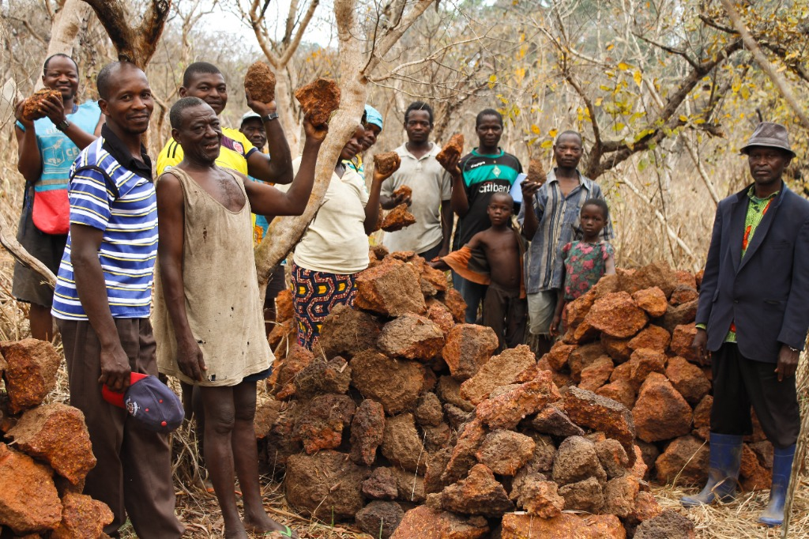
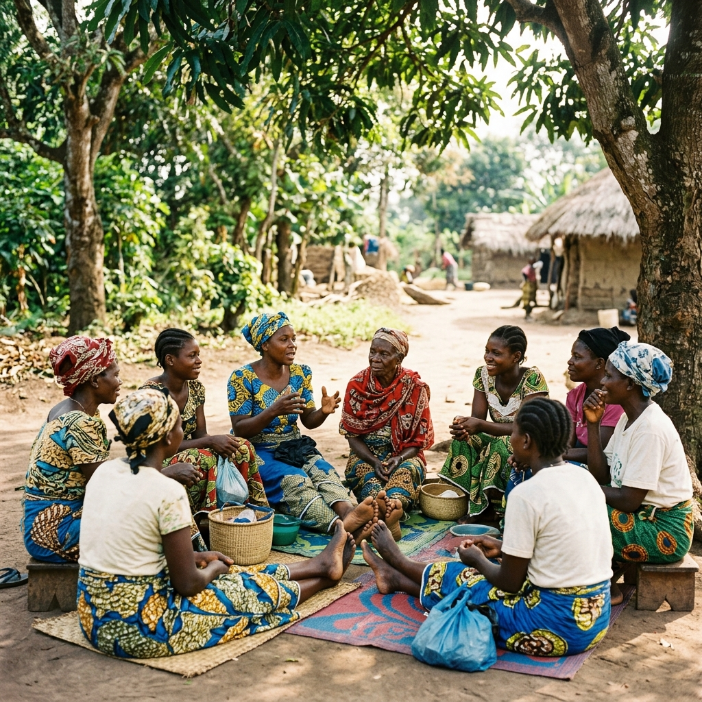
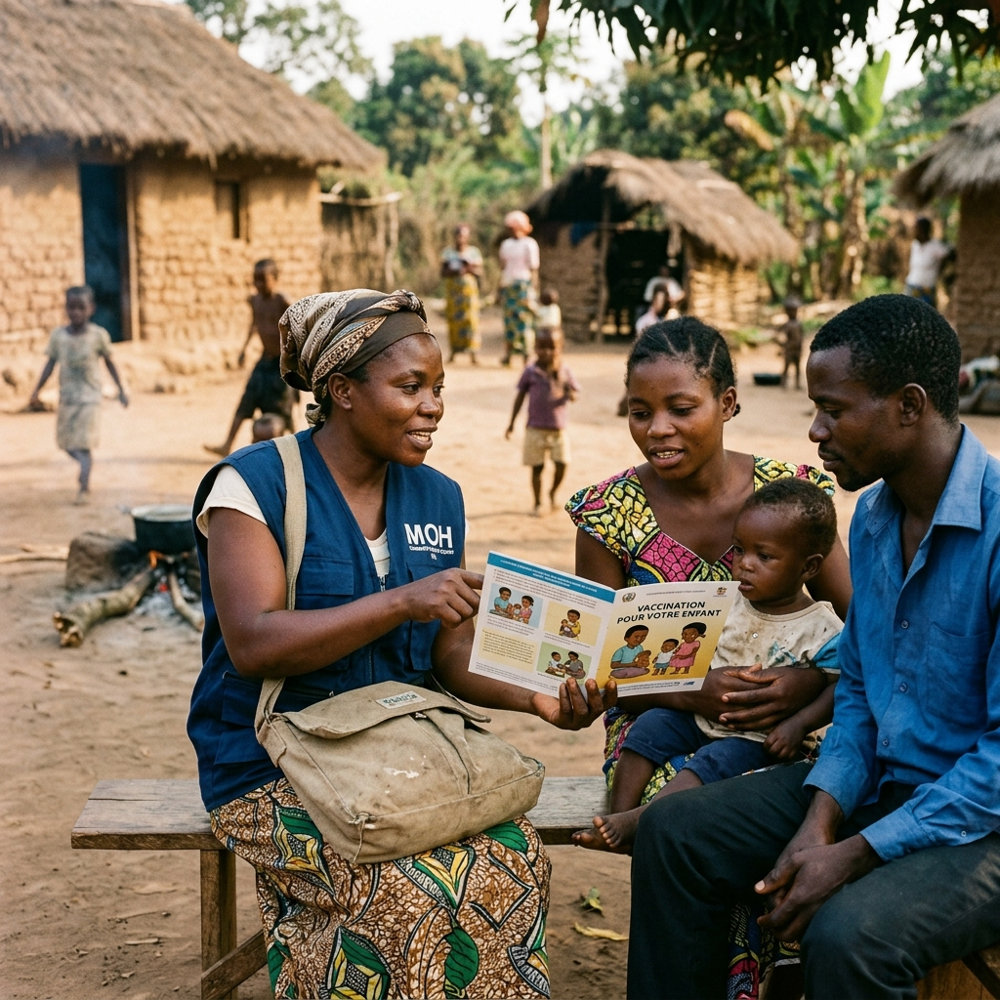
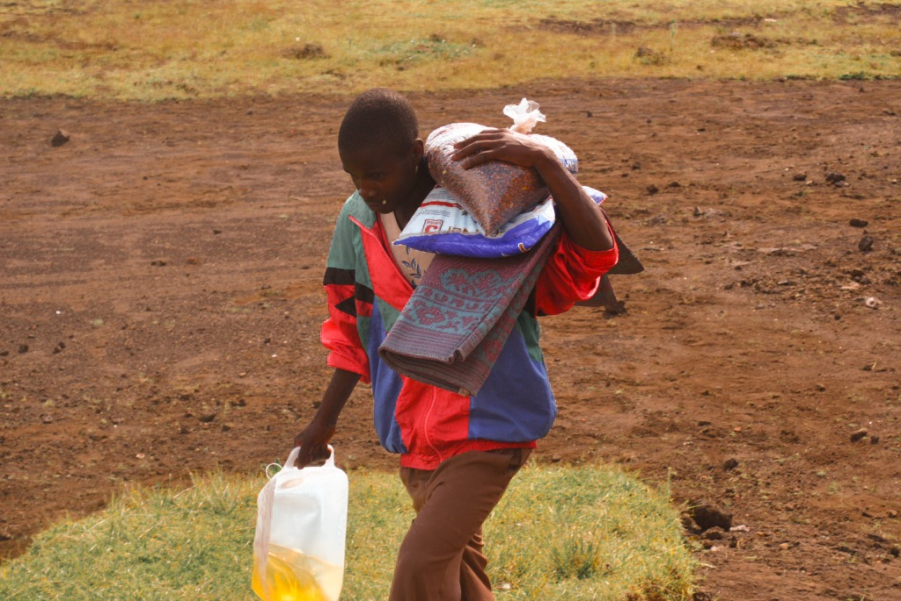
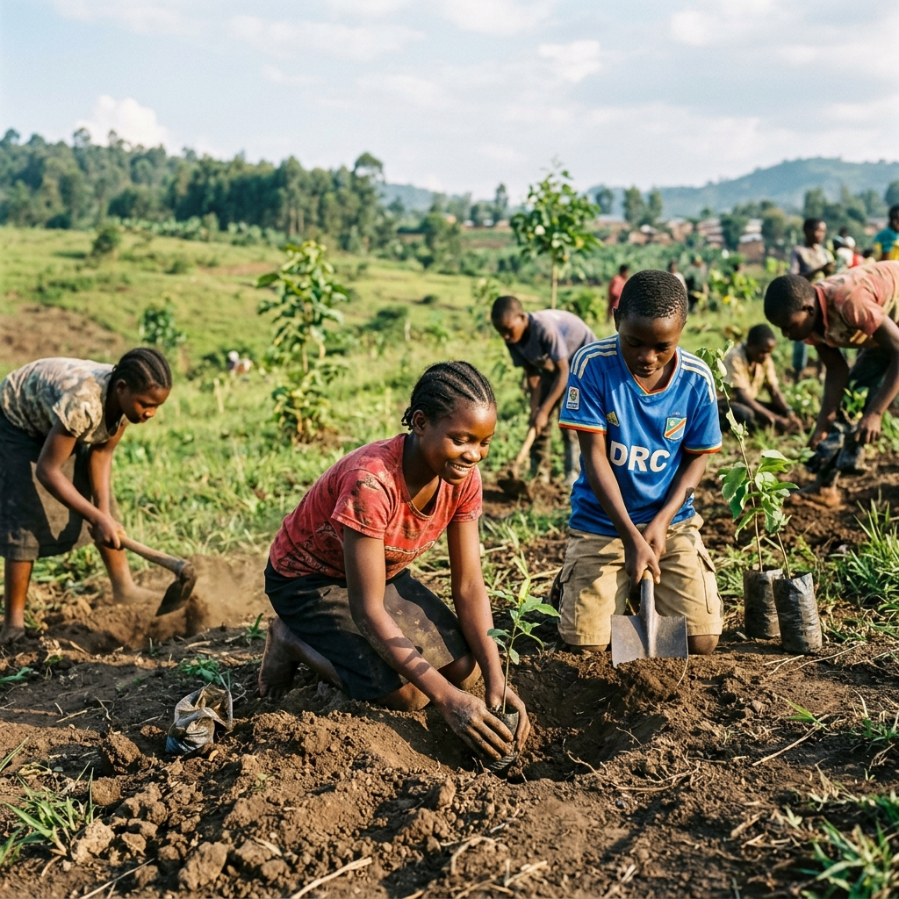
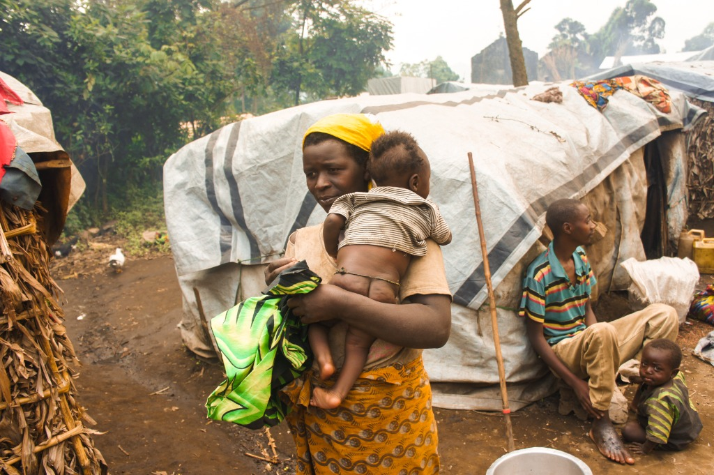

Notre raison d'être au service de la reconstruction communautaire intégrale.
Le HRL-CU asbl s’est assigné un objectif global : apporter une aide nécessaire aux populations fragiles exposées aux effets de la transmission intergénérationnelle du traumatisme et de la violence dans son rayon d’action.
Nous découvrons et mettons en œuvre les meilleurs moyens et connaissances pour contribuer à la reconstruction communautaire intégrale, en passant par la guérison des traumatismes, l’amélioration des pratiques socio-culturelles, la réponse aux préoccupations citoyennes et l’initiation à l’éducation à la paix, pour le développement et le renforcement de la cohésion sociale.
Notre action se décline en sept objectifs spécifiques, complémentaires les uns des autres. Chacun répond à un défi concret rencontré par les communautés de l’Est de la RDC.

Plaidoyer pour limiter les effets de la transmission intergénérationnelle du traumatisme et de la violence. Participation active du plus grand nombre, avec une attention particulière aux personnes les plus stigmatisées, pour consolider leur réinsertion au sein de la société, par la compréhension et l’apprentissage des méthodes de base pour répondre au traumatisme.

Amener la communauté à développer des mécanismes non violents de résolution des conflits, et renforcer les capacités des structures locales œuvrant dans la pacification, en encourageant la culture de l’éducation à la paix dans la communauté à la base.

Lutter contre les normes sociales qui défavorisent la femme, promouvoir la participation de la femme au sein de la société et sensibiliser la communauté à la lutte contre les violences sexuelles et basées sur le genre.

À travers une communication étendue, améliorer les conditions de vie de la femme et de l’homme en les incitant à utiliser les méthodes appropriées afin de jouir d’une sexualité saine, dans l’intérêt de la famille.

À travers la sensibilisation et la formation, accompagner la communauté à exploiter les champs pour accroître la productivité, en vue de combattre la faim, par la disponibilité, la satisfaction et l’utilisation alimentaire saine et équilibrée.

Sensibiliser la population à la gestion des déchets et encourager le reboisement des zones menacées par la déforestation et l’érosion, en appelant la communauté à perpétuer la culture de planter les arbres en milieux urbains et ruraux.

Prévenir et lutter contre la violence, l’exploitation et les mauvais traitements infligés aux enfants, y compris l’exploitation sexuelle à des fins commerciales, la traite et le travail des enfants, ainsi que les pratiques traditionnelles préjudiciables comme les mutilations génitales féminines / l’excision et le mariage des enfants.